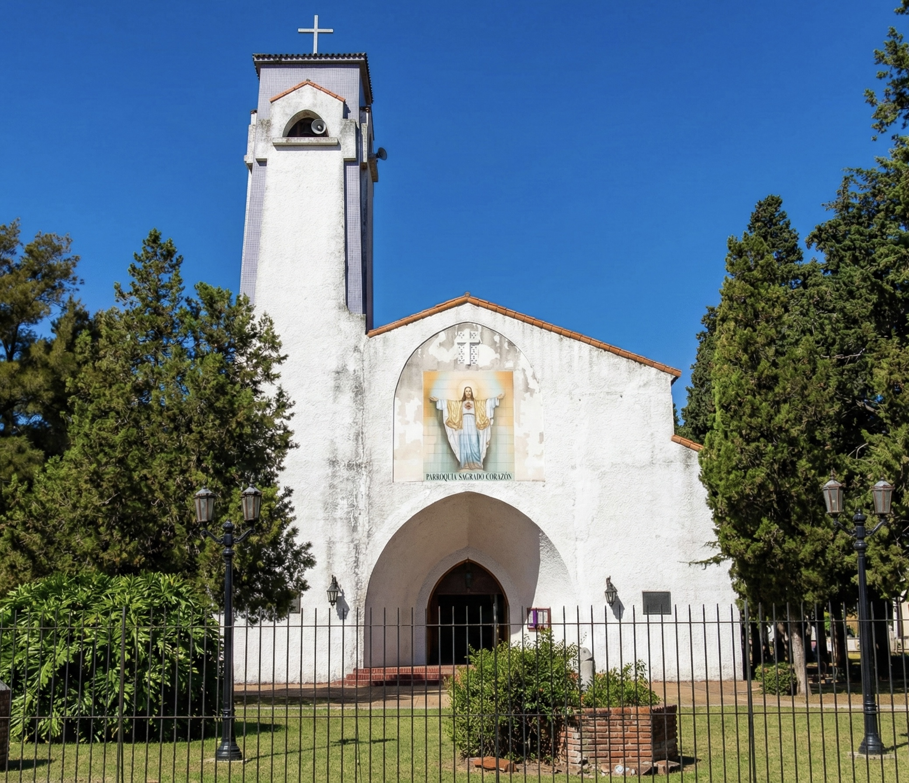

"Comunidad unida en la fe y la caridad"
Consultar HorariosUn lugar de encuentro para todos los vecinos de Claypole. Te invitamos a participar de nuestras celebraciones y a formar parte de esta gran familia parroquial.

Atención en secretaría de Martes a Viernes de 16:30 a 18:30hs.
Ver requisitos para Bautismos →